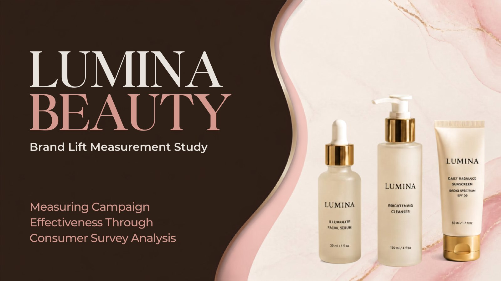
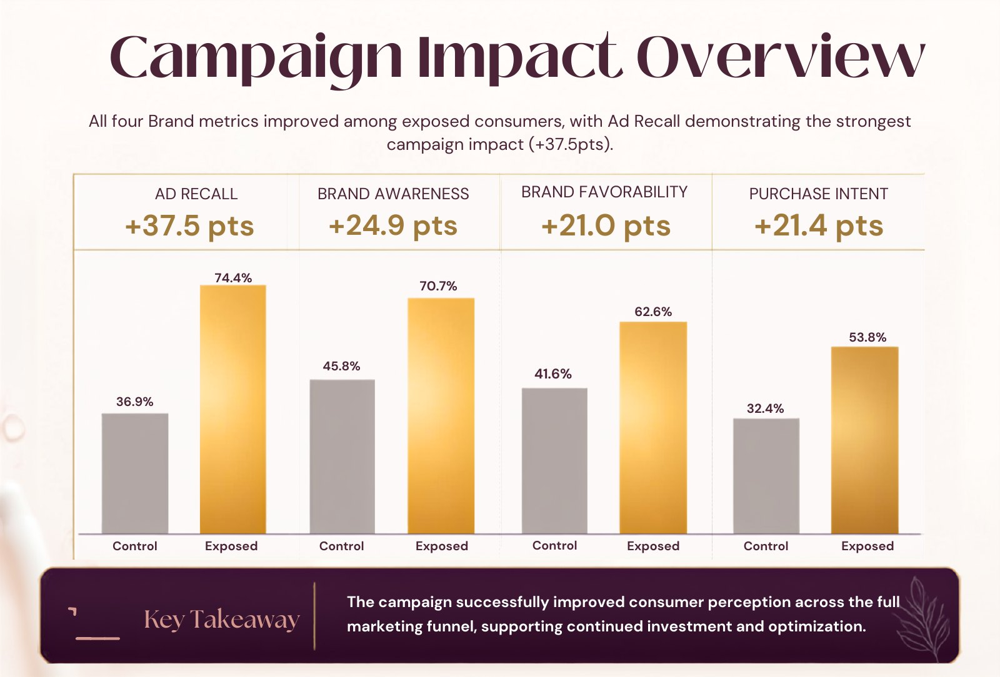
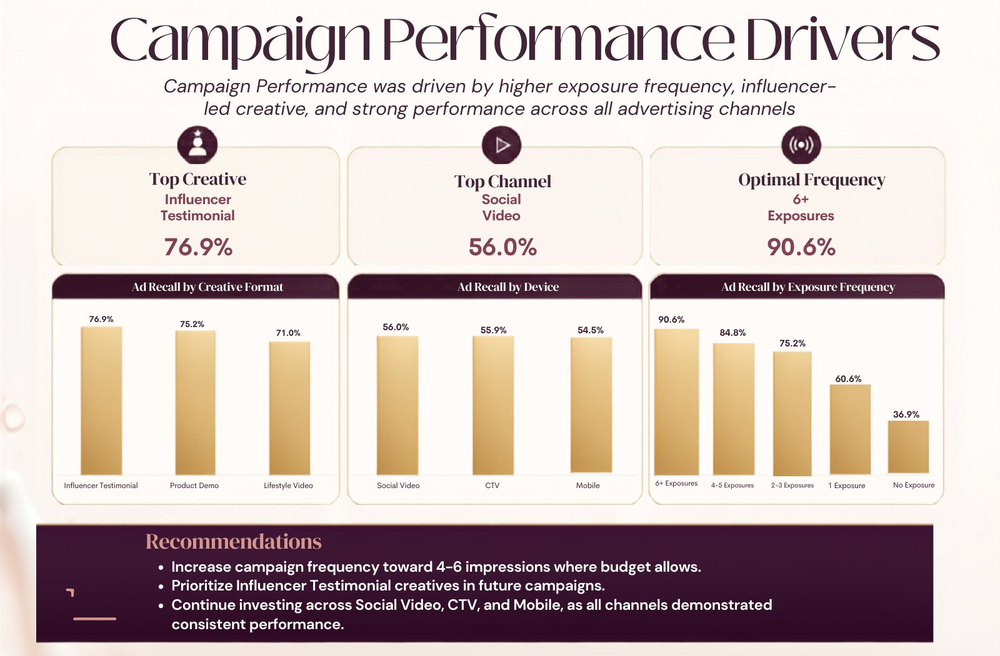
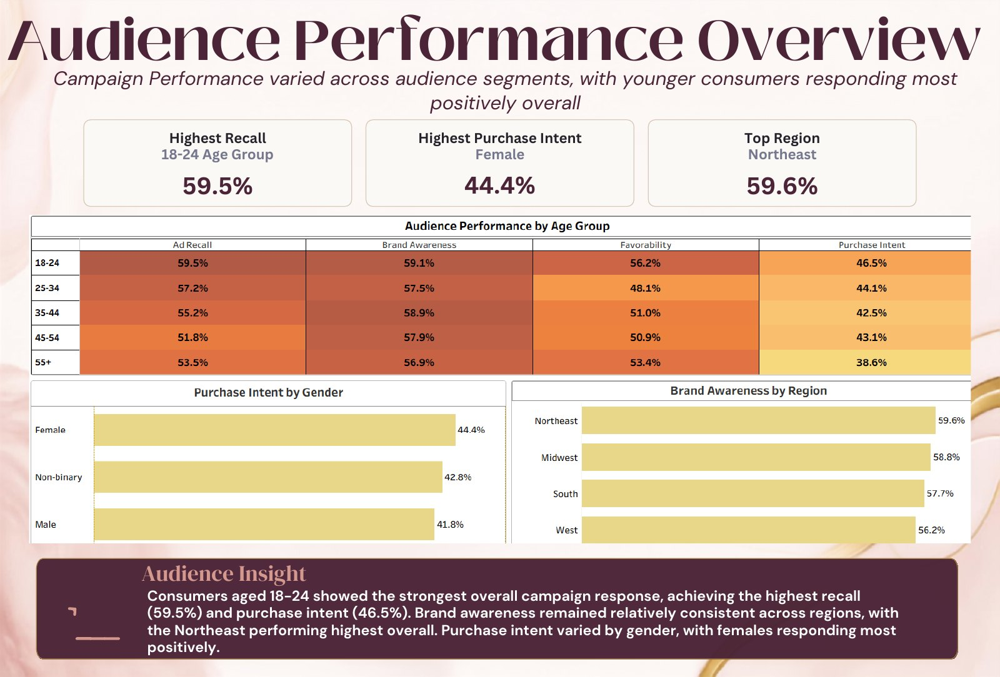
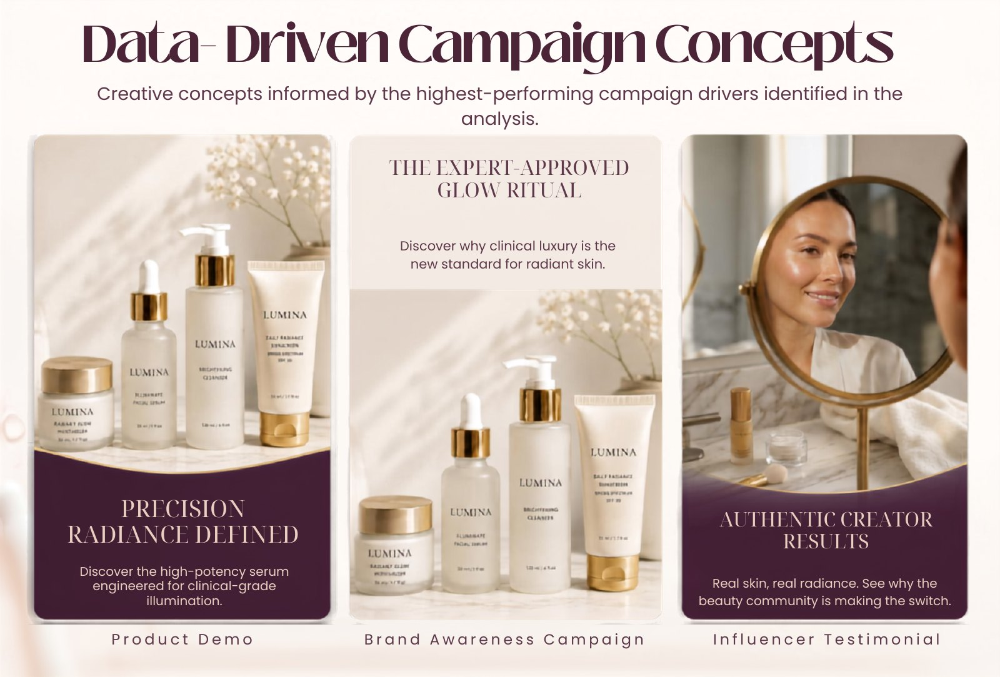

Influencer testimonial
76.9% ad recall made creator-led storytelling the best-performing creative concept.
Brand lift measurement · 2025
Measuring campaign effectiveness through synthetic consumer survey analysis—then turning the findings into smarter creative, channel, and audience choices.

Lumina Beauty is a fictional luxury skincare brand assessing the impact of a multi-channel awareness campaign.
The study evaluates lift in ad recall, brand awareness, favorability, and purchase intent—and identifies the creative, media, frequency, and audience signals behind the strongest response.
The analysis uses a synthetic dataset designed to demonstrate a complete brand-lift measurement workflow.
02 · Campaign impact
Consumers exposed to the campaign outperformed the control group across the complete brand funnel.
point lift in ad recall
point lift in brand awareness
point lift in favorability
point lift in purchase intent

03 · What worked
The strongest results point to a clear combination of social storytelling and sustained, not excessive, exposure.
76.9% ad recall made creator-led storytelling the best-performing creative concept.
56.0% purchase intent lift demonstrates the strength of visual, social-first media.
90.6% ad recall showed the impact of repeated, consistent exposure.

04 · Audience response
Young adults responded most strongly overall, with additional signals by gender and region to guide targeting.

06 · Applying the findings
The resulting concepts pair product education with social proof, using the channels and messages that showed the greatest potential.

Project resources
Explore the Tableau story or review the SQL validation and Python workflow behind the analysis.